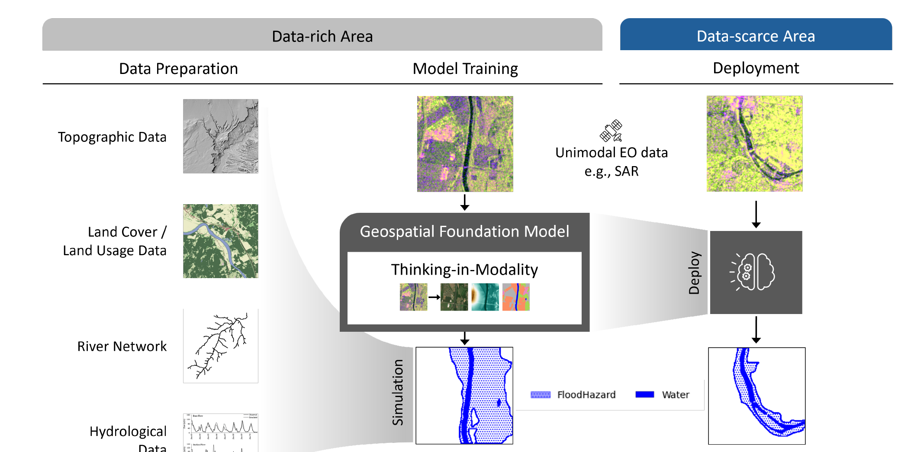
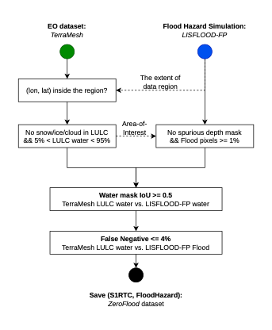

Challenge signal: ZeroFlood is a Round 1 winner selected to advance to the TerraMind Blue-Sky Challenge Grand Final.
Round 1 winner · TerraMind Blue-Sky Challenge Grand Finalist
ZeroFlood: Finals-Ready Flood Hazard Mapping with Geo-Foundation Models
A Round 1-winning TerraMind Blue-Sky Challenge prototype, now developed into an EUSAR paper and interactive Grand Final demo for the 2nd ESA-NASA Workshop on AI Foundation Model for Earth Observation.
Round 1 Winner
Grand Finalist
EUSAR Paper
Live Demo
Round 1
winner advancing to finals
225
European demo pins
89.12
best S1RTC F1 with TiM-l
Finalist narrative
Scientific upgrade: the winning prototype becomes an EUSAR paper on flood hazard mapping from minimal EO inputs.
Finals proof: the live explorer lets judges inspect real European samples, basemaps, modalities, and model predictions.
Paper direction
From Round 1 winner to EUSAR paper
ZeroFlood began as a Round 1-winning TerraMind Blue-Sky Challenge demo and is now a paper-grade study of flood hazard mapping with geospatial foundation models. The core motivation is practical: flood hazard mapping is essential for disaster prevention but remains difficult in data-scarce regions where traditional hydrodynamic models require extensive geophysical inputs.
The EUSAR paper extends the winning idea into a systematic evaluation: pair EO data with flood hazard simulations across Europe, test recent GeoFMs for flood segmentation, and use TerraMind's Thinking-in-Modality to compensate for missing spatial information such as LULC and DEM.
Method
A TerraMind-first pipeline, not just another fine-tune

Pair EO with flood simulations
TerraMesh modalities are spatially aligned with LISFLOOD-FP hazard simulations to create training targets.
Train GeoFM flood decoders
GeoFM encoders are frozen and connected to a UPerNet decoder for flood hazard segmentation.
Recover missing modalities
TiM generates auxiliary tokens, for example DEM or LULC, from the available EO modality.
Deploy in sparse-data regions
The trained model can infer hazard masks from SAR imagery where hydrodynamic inputs are unavailable.
Dataset
Europe-wide evidence base for the finals demo


20,868train samples
5,217validation samples
225curated Europe demo samples
10 mEO tile resolution
Grand Final demo
Explore the Round 1-winning system across European validation pins
Select a pin or choose a region from the controls to inspect how the finalist system behaves across Europe. Switch between light, satellite, and terrain basemaps, then compare SAR, optical, DEM, LULC, ground truth, and multiple ZeroFlood/TiM flood predictions at corrected longitude/latitude coordinates.
225Europe pins loaded
28Europe regions
12overlay choices
3basemaps
Map tiles are unavailable. Use the region and sample selectors to explore the data.
Finals evidence
What the Grand Final panel should remember
The paper reports mIoU, F1, recall/HitRate, and precision/TrueAlarm. The key message for the finals is simple: TerraMind provides the strongest foundation-model baseline, and TiM often improves recall by injecting generated modality tokens when direct inputs are missing.
- SAR-only prediction is viable: TerraMind reaches 88.36 F1 from S1RTC alone, beating UNet by 3.70 points.
- TiM helps the single-modality case: TerraMind-TiM-l improves S1RTC to 89.12 F1 and lifts recall to 88.45.
- Optical input is also strong: S2L2A with TerraMind reaches 88.58 F1 with the highest S2 precision, 90.60.
- Two modalities set the best ceiling: S1RTC + S2L2A reaches 89.16 F1 and 91.25 precision with TerraMind.
S1RTC input
| Model | mIoU | F1 | Recall | Precision |
|---|---|---|---|---|
| UNet | 80.42 | 84.66 | 81.00 | 88.67 |
| ViT | 80.35 | 84.64 | 81.46 | 88.08 |
| SSL4EO-MAE | 81.09 | 85.23 | 81.39 | 89.44 |
| CROMA | 79.30 | 83.63 | 79.72 | 87.95 |
| DOFA | 82.86 | 86.90 | 84.80 | 89.11 |
| TerraMind | 84.56 | 88.36 | 86.77 | 90.02 |
| TerraMind-TiM-l | 85.41 | 89.12 | 88.45 | 89.80 |
| TerraMind-TiM-ds | 85.08 | 88.82 | 87.62 | 90.05 |
| TerraMind-TiM-dsl | 84.73 | 88.54 | 87.53 | 89.57 |
S2L2A input
| Model | mIoU | F1 | Recall | Precision |
|---|---|---|---|---|
| UNet | 81.93 | 85.99 | 82.45 | 89.85 |
| ViT | 82.19 | 86.36 | 84.64 | 88.15 |
| SSL4EO-MAE | 80.84 | 85.16 | 82.93 | 87.50 |
| CROMA | 82.35 | 86.46 | 84.33 | 88.71 |
| DOFA | 83.09 | 87.08 | 84.71 | 89.59 |
| TerraMind | 84.86 | 88.58 | 86.66 | 90.60 |
| TerraMind-TiM-s | 84.69 | 88.45 | 86.56 | 90.42 |
| TerraMind-TiM-sl | 84.41 | 88.22 | 86.42 | 90.10 |
| TerraMind-TiM-dls | 84.58 | 88.38 | 86.83 | 89.99 |
S1RTC + S2L2A input
| Model | mIoU | F1 | Recall | Precision |
|---|---|---|---|---|
| UNet | 81.67 | 85.84 | 83.19 | 88.66 |
| ViT | 82.36 | 86.48 | 84.49 | 88.57 |
| CROMA | 81.67 | 85.85 | 83.29 | 88.57 |
| DOFA | 83.00 | 87.06 | 85.41 | 88.77 |
| TerraMind | 85.57 | 89.16 | 87.17 | 91.25 |
| TerraMind-TiM-d | 85.40 | 89.04 | 87.17 | 90.98 |
| TerraMind-TiM-dl | 85.43 | 89.08 | 87.51 | 90.70 |
Open science
Paper, code, and reproducibility artifacts
@article{kim2025zeroflood,
title={ZeroFlood: Flood Hazard Mapping from Single-Modality SAR Using Geo-Foundation Models},
author={Kim, Hyeongkyun and Oikonomou, Orestis},
journal={arXiv preprint arXiv:2510.23364},
year={2025}
}
@misc{zerofloodCode2026,
title={zeroflood},
author={Kim, Hyeongkyun},
year={2026},
publisher={GitHub},
journal={GitHub repository},
url={https://github.com/khyeongkyun/zeroflood}
}
@misc{zerofloodDataset2026,
title={ZeroFlood},
author={Kim, Hyeongkyun},
year={2026},
publisher={Hugging Face},
journal={Hugging Face dataset},
url={https://huggingface.co/datasets/khyeongkyun/ZeroFlood}
}